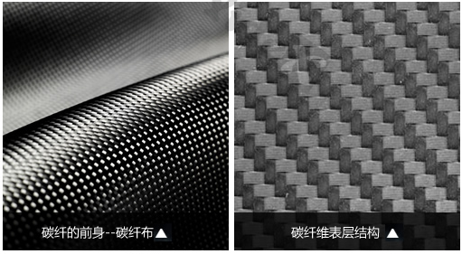
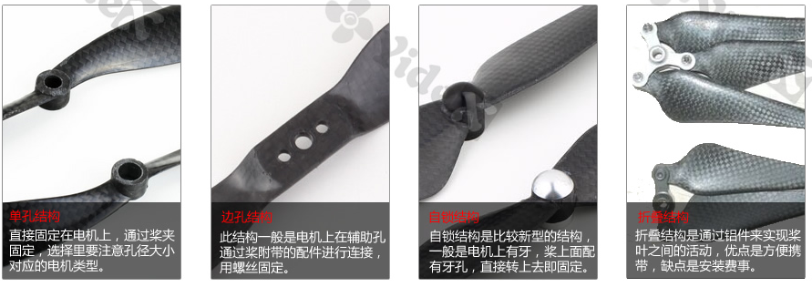
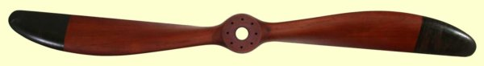

螺旋槳的型號由如8045，1038等4位數字表示，分別代表槳葉兩個重要的參數，槳直徑和槳螺距。槳直徑是指槳轉動所形成的圓的直徑，對於雙葉槳（兩片槳葉，這是最常用的槳）恰好是兩片槳葉長度之和，由前兩位數字表示，如上面的80和10，單位為英寸。槳螺距則代表槳旋轉一週前進的距離，由後兩位數字表示，如上面的45和38。槳直徑和螺距越大，槳能提供的拉（推）力越大。
以Phantom的槳葉為例。Phantom 1使用的是8045的槳葉，表示槳直徑為8英寸（8×2.54=20.32釐米），槳螺距為4.5英寸；而Phantom 2使用的是9443的槳葉，表示槳直徑為9.4英寸，槳螺距為4.3英寸。從槳葉的規格可以看出，Phantom的第二代能夠提供更大的動力。
對於玩大四軸的人來說，槳葉的材質也是非常有考究的。根據槳葉使用材質的不同，現在市面上有的包括碳纖槳，木槳，注塑槳。
注塑漿：注塑槳是指使用塑料等複合材料製成的槳葉。在航模愛好者中以美國APC公司生產的槳葉最為有名，質量最好。淘寶上也有三種大類，分別是原裝APC，ATG生產的假APC，以及不知名小廠生產的最廉價的有APC漿外觀的塑料槳。
APC漿有一個衍生系列多軸專用的MR系列。優點是增強了漿的硬度，減少了重量，再次提高效率，解決了之前的高速轉動漿尖變形問題。缺點是價格較貴，原裝價格在89-128之間，並且無合適的墊圈，需要自己找物料縮小孔徑。
碳纖維是一種與人造絲，合成纖維一樣的纖維狀碳材料。由於碳纖維的材料原因，它有優異的硬度和合適的漿型，非常適合技巧性飛行和3D飛行。碳纖漿效率優於木漿，價格比木漿更貴，稍微低於原裝APC。

幾種不同的碳纖槳葉。

木漿的材料多為櫸木，硬度高，重量輕，經過風乾打蠟上漆以後不怕受潮。在航空史上，木槳在早期扮演了非常重要的角色。一戰時期的很多飛機都是使用的木槳，後來才逐漸被鐵槳取代。專門提供飛行器的木漿的公司sensenich。
在航模愛好者中，木槳主要用在固定翼飛行器上，最為高端的是歐洲XOAR公司的木槳。
下面是一個提供了很多關於螺旋槳知識，歷史，設計的網站heliciel。
槳葉會隨著電機高速旋轉，所以其旋轉平衡是一個很重要的指標。如果槳葉有一頭重一頭輕，或者一側輕一側重等不平衡問題，那麼在旋轉時就會產生左右/前後晃動等問題。這樣不僅僅動力效率低，而且還可能會損壞電機造成航模飛機炸機。一般的槳葉都已經進行過自平衡測試，對於要求高的場合也可以自己調節槳葉的自平衡。下面是一種常見的測試自平衡的工具。
當然，對於像Crazepony這樣的小四軸，一般就很少考慮槳葉自平衡問題。
不同的槳葉和電機（KV值不一樣）能夠形成不同的動力組合，適合於不同的航模飛機和應用場景。
無刷電機繞線匝數多的，KV值低，最高輸出電流小，但扭力大。達到同樣的推力，要比高KV值的剩電，所以四軸飛行器多使用小KV的電機。
無刷電機繞線匝數少的，KV值高，最高輸出電流大，但扭力小。同樣的設備重量（電機、電調、電池），得到的最大推力要高過低KV值的電機。
簡單的說，相同的電機和電池，大KV值用小的螺旋槳，小KV值用大的螺旋槳。相對來說螺旋槳配得過小，不能發揮最大推力。相對來說螺旋槳配得過大，電機會過熱，會使電機退磁，造成電機性能的永久下降。
原則上，更小的KV值和更大的槳葉，能夠表現出更好的動力效率。也就是說相同的電池，能夠飛行的時間更長。例如X5C這樣的玩具飛機，電機和槳葉由減速齒輪連接。減速齒輪降低了電機的KV值，有更好的動力效率。Crazepony現在使用30000轉/分鐘的空心杯電機，75cm槳葉。當配備350mAh電池時，能夠飛行4-5min左右。在電機和槳葉的動力效率組合方面，應該還有進步的空間。
木槳在人類航空早期扮演了非常重要的角色。一戰時期的很多飛機都是使用的木槳，後來才逐漸被鐵槳取代。下面是那個時候木槳的一些珍貴圖片。

更多關於木槳的知識，參考Wooden Propellers(A site dedicated to the preservation of early wooden airplane propellers)。